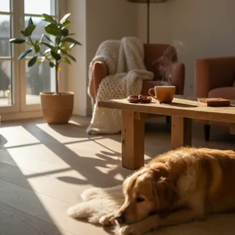
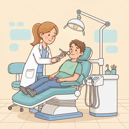

deutschoderwas · Sprechclub · Woche 2 · Strang A · Teil 1 · Montag, 21. September
Einen Termin machen
„Wann würde es Ihnen denn passen?“ — und dann ist Stille in der Leitung. Heute lernst du die Sätze, mit denen du jeden Termin bekommst.
Dein Niveau
Gleiches Thema, andere Sätze. Wechsle jederzeit — probier ruhig beides.
„Praxis Dr. Weber, guten Tag.“
Schaut euch das Bild an. Du willst einen Termin. Was sagst du in den ersten zehn Sekunden?
Wo hast du zuletzt einen Termin gemacht — beim Arzt, beim Amt, beim Friseur?
Machst du Termine lieber am Telefon oder online?
Was ist am Telefon am schwersten?
Warum braucht man in Deutschland für fast alles einen Termin?
Was tust du, wenn der nächste freie Termin in drei Monaten ist?
Wann lohnt es sich, hartnäckig zu bleiben — und wann nicht?
🗣️ Sprecht reihum: „Zuletzt habe ich einen Termin gemacht bei …“ · „Am Telefon fällt mir schwer …“ · „Ich sage dann immer: …“
Vier Schritte, und der Termin steht
Melden, Anliegen sagen, Zeit vorschlagen, bestätigen. Immer dieselbe Reihenfolge — beim Arzt, beim Amt, in der Werkstatt.
Was sagst du, wenn die vorgeschlagene Zeit nicht passt?
Wie fragst du nach einem früheren Termin?
Was wiederholst du am Ende immer?
👀 Zu zweit, dreißig Sekunden: Einer sagt nur „Praxis Weber, guten Tag.“ — der andere bringt Name, Anliegen und Wunschzeit in einem Atemzug. Dann tauschen.
Zwölf Wörter für die Terminvergabe
Sagt jedes Wort laut — und gleich den Beispielsatz hinterher. Erst dann bleibt es hängen.
der Termin
„Ich hätte gern einen Termin bei Dr. Weber.“
💡 einen Termin machen, ausmachen, vereinbaren — alle drei gehen. Und später: verschieben oder absagen.
anrufen
„Ich rufe wegen eines Termins an.“
💡 Trennbar: Ich rufe … an. Und die feste Wendung: anrufen wegen + Genitiv.
die Sprechstunde
„Die Sprechstunde ist von acht bis zwölf.“
💡 Beim Arzt und in der Uni. Ohne Termin heißt es offene Sprechstunde — dann wartet man.
der Vormittag
„Am Vormittag hätte ich Zeit.“
💡 am Vormittag, am Nachmittag, am Abend — aber: in der Nacht. Das eine Wort tanzt aus der Reihe.

der Nachmittag
„Nachmittags kann ich leider nicht.“
💡 Ohne Artikel und mit -s wird daraus die Gewohnheit: nachmittags heißt „jeden Nachmittag“.
die Uhrzeit
„Welche Uhrzeit würde Ihnen passen?“
💡 Offiziell sagt man vierzehn Uhr dreißig, im Alltag halb drei. Beim Termin lieber die offizielle Form.
frei
„Haben Sie am Dienstag noch etwas frei?“
💡 ein freier Termin, etwas frei haben. Und die Gegenfrage lautet: Ist da noch was frei?
🤝
passen
„Donnerstag um zehn würde mir gut passen.“
💡 Immer mit Dativ: Das passt mir. Und die Standardfrage am Telefon: Wann würde es Ihnen passen?
🚨
dringend
„Es ist dringend, ich habe seit drei Tagen Schmerzen.“
💡 Das Wort, das einen früheren Termin möglich macht. Aber nur benutzen, wenn es stimmt.
die Versichertenkarte
„Bringen Sie bitte Ihre Versichertenkarte mit.“
💡 Auch die Gesundheitskarte. Ohne sie zahlst du beim Arzt erst mal selbst.
✅
bestätigen
„Ich bestätige: Donnerstag, der 24., um zehn Uhr.“
💡 Am Telefon Gold wert: Wiederhol Tag, Datum und Uhrzeit. So fällt jeder Hörfehler sofort auf.
der Rückruf
„Können Sie mir einen Rückruf einrichten?“
💡 um einen Rückruf bitten. Dazu gehören immer: Name, Nummer und wann du erreichbar bist.
💡 Spiel: Verdeckt die Wörter. Wer eine Karte trifft, baut damit einen Satz, den man am Telefon wirklich sagt.
Drei Arten, eine Zeit zu nennen
Erst die drei Formen, mit denen man einen Zeitpunkt angibt. Darunter drei Sätze richtig und falsch nebeneinander.
🎯
Genau
Ein fester Zeitpunkt — mit um.
um zehn Uhr · um halb drei · um Viertel nach neun
🌤️
Ungefähr
Ein Zeitraum — mit gegen, ab, zwischen.
gegen zehn · ab neun · zwischen zwei und drei
📅
Der Tag
Wochentage und Tageszeiten — mit am.
am Montag · am Vormittag · am 24. September
✅ So sagt man es
Am Montag um zehn Uhr.
Warum das stimmtam für den Tag, um für die Uhrzeit. Beide zusammen, in dieser Reihenfolge.
❌ So nicht
Um Montag am zehn Uhr.
Das ProblemDie beiden sind vertauscht. Merksatz: am Tag, um die Uhr.
✅ So sagt man es
Donnerstag um zehn würde mir gut passen.
Warum das stimmtpassen steht mit Dativ: mir, Ihnen, uns. So fragt jede Praxis am Telefon.
❌ So nicht
Donnerstag um zehn würde mich gut passen.
Das Problemmich ist Akkusativ. Bei passen, gefallen und gehören steht immer der Dativ.
✅ So sagt man es
Im Oktober habe ich mehr Zeit.
Warum das stimmtBei Monaten und Jahreszeiten steht im: im Oktober, im Sommer, im nächsten Jahr.
❌ So nicht
Am Oktober habe ich mehr Zeit.
Das Problemam gehört zu Tagen, im zu Monaten. Und die Uhrzeit bekommt um.
Drei Sätze, die erstaunlich oft funktionieren:
„Gibt es eine Warteliste für kurzfristige Absagen?“
„Ich bin zeitlich flexibel — auch kurzfristig.“
„Rufen Sie mich gern an, wenn jemand absagt.“
In fast jeder Praxis sagt täglich jemand ab. Wer auf der Liste steht und ans Telefon geht, ist oft in ein paar Tagen dran.
⚖️ Kurzübung: Jeder nennt drei Zeiten für einen Termin — eine genaue, eine ungefähre und einen ganzen Tag. Die Gruppe hört, ob am, um oder im passt.
Die vier Sätze, die immer gehen
In dieser Reihenfolge: melden, Anliegen sagen, Zeit vorschlagen, bestätigen. Wer sie kann, bekommt jeden Termin.
1 · 📞 Melden Guten Tag, mein Name ist …Hier ist …Ich rufe an wegen …
So klingt esGuten Tag, mein Name ist Kaya Demir. Ich rufe wegen eines Termins an.
2 · 🎯 Anliegen sagen Ich hätte gern einen Termin.Ich brauche einen Termin für …Es geht um …
So klingt esIch hätte gerneinen Termin zur Kontrolle.
3 · 🗓️ Zeit vorschlagen Am Montag hätte ich Zeit.Vormittags wäre gut.Geht es auch später?
So klingt esAm Montagam Vormittaghätte ich Zeit.
4 · ✅ Bestätigen Also Donnerstag um zehn.Was soll ich mitbringen?Vielen Dank!
So klingt esAlso: Donnerstag, der 24., um zehn Uhr. Vielen Dank!
1 · 📞 Melden mit Bezug Guten Tag, Demir mein Name — ich bin Patientin bei Ihnen.Ich rufe im Auftrag von … an.Ich habe Ihre Nummer von …
So klingt esGuten Tag, Demir mein Name — ich binseit zwei JahrenPatientin bei Ihnen.
2 · 🎯 Anliegen einordnen Es handelt sich um eine Nachkontrolle.Mir wurde geraten, mich vorzustellen.Es wäre eher dringend.
So klingt esEs handelt sich um eine Nachkontrolle — es wäreeher dringend.
3 · 🗓️ Spielraum zeigen Ich bin zeitlich recht flexibel.Vormittags ginge es besser als nachmittags.Auch kurzfristig, wenn jemand absagt.
So klingt esIch binzeitlich recht flexibel — auch kurzfristig, wenn jemand absagt.
4 · ✅ Absichern Darf ich das kurz wiederholen?Bekomme ich eine Erinnerung?Was muss ich mitbringen?
So klingt esDarf ich daskurz wiederholen — Donnerstag, der 24., um zehn?
Verb worum es geht Zeit und Datum Höflichkeit
🗣️ Sofort anwenden: Jeder macht einen kompletten Termin am Stück — melden, Anliegen, Zeit, bestätigen. Vier Sätze, kein Zögern.
Vier Anrufe — zwei Runden
Runde 1: Lest den Dialog zu zweit laut. Runde 2: Auf den Knopf tippen — B verschwindet, und ihr antwortet selbst. Die Regieanweisung bleibt als Hilfe stehen.
Dialog 1 · „Beim Hausarzt“
Montagmorgen, kurz nach acht. Du brauchst einen Termin zur Kontrolle.
A
Praxis Dr. Weber, Meier am Apparat, guten Tag.
B
Guten Tag, mein Name ist Kaya Demir. Ich hätte gern einen Termin zur Kontrolle.
🗣️ Grüßen, Name, Anliegen. Alles in einem Atemzug.tippen = Hilfe zeigen
A
Waren Sie schon einmal bei uns?
B
Ja, seit zwei Jahren. Der letzte Termin war im März.
🗣️ Antworte kurz und gib ein Detail dazu — das hilft beim Suchen.tippen = Hilfe zeigen
A
Wann würde es Ihnen denn passen?
B
Am Vormittag wäre gut. Haben Sie diese Woche noch etwas frei?
🗣️ Nenn eine Tageszeit, keine feste Stunde — dann gibt es mehr Auswahl.tippen = Hilfe zeigen
A
Donnerstag um zehn hätte ich noch etwas.
B
Donnerstag, der 24., um zehn — das passt. Was soll ich mitbringen?
🗣️ Wiederhol Tag, Datum, Uhrzeit. Und frag nach den Unterlagen.tippen = Hilfe zeigen
A
Nur die Versichertenkarte. Bis Donnerstag!

Dialog 2 · „Es tut weh“
Zahnschmerzen seit dem Wochenende. Der nächste freie Termin ist in acht Wochen.
A
Der nächste freie Termin wäre am 18. November.
B
Das ist lang. Es wäre eher dringend — ich habe seit drei Tagen Schmerzen.
🗣️ Sag, dass es dringend ist, und nenn den Grund konkret.tippen = Hilfe zeigen
A
Dann kommen Sie morgen in die Schmerzsprechstunde, acht Uhr.
B
Sehr gern. Muss ich mit Wartezeit rechnen?
🗣️ Nimm an und frag praktisch nach — nicht klagen, planen.tippen = Hilfe zeigen
A
Ja, meistens ein bis zwei Stunden.
B
Das ist in Ordnung. Und für die Kontrolle danach hätte ich gern noch einen regulären Termin.
🗣️ Akzeptiere und sichere gleich den zweiten Termin.tippen = Hilfe zeigen
A
Mache ich. Ich rufe Sie dazu noch mal an.
Dialog 3 · „Beim Amt“
Du brauchst einen Termin bei der Ausländerbehörde. Es gibt nur eine Hotline.
A
Bürgerservice, Krämer, guten Tag.
B
Guten Tag, Demir mein Name. Ich brauche einen Termin zur Verlängerung meines Aufenthaltstitels.
🗣️ Name und Anliegen möglichst genau — beim Amt zählt das genaue Wort.tippen = Hilfe zeigen
A
Haben Sie schon eine Kundennummer?
B
Ja, Moment — 4-4-8-2-1.
🗣️ Zahlen einzeln und langsam sprechen.tippen = Hilfe zeigen
A
Termine gibt es erst wieder ab Mitte November.
B
Mein Titel läuft am 30. Oktober ab. Gibt es dafür eine andere Möglichkeit?
🗣️ Nenn die Frist als Fakt und frag nach einer Lösung, statt zu diskutieren.tippen = Hilfe zeigen
A
Dann stelle ich Ihnen eine Fiktionsbescheinigung aus. Kommen Sie diese Woche vorbei.
B
Das mache ich. Vielen Dank für die Auskunft!
🗣️ Bestätigen und danken — kurz halten.tippen = Hilfe zeigen
Dialog 4 · „Niemand geht ran“
Dritter Versuch, immer nur der Anrufbeantworter. Jetzt sprichst du drauf.
A
Sie haben die Praxis Dr. Weber erreicht. Bitte hinterlassen Sie eine Nachricht.
B
Guten Tag, hier spricht Kaya Demir.
🗣️ Zuerst der Name, deutlich und langsam.tippen = Hilfe zeigen
A
…
B
Ich rufe an wegen eines Termins zur Kontrolle. Am liebsten vormittags.
🗣️ Der Grund in einem Satz, danach deine Wunschzeit.tippen = Hilfe zeigen
A
…
B
Sie erreichen mich unter null eins fünf eins — zwei drei vier — fünf sechs sieben. Ich wiederhole: …
🗣️ Nummer langsam, dann noch einmal wiederholen. Immer.tippen = Hilfe zeigen
A
…
B
Ich bin ab vierzehn Uhr erreichbar. Vielen Dank und auf Wiederhören.
🗣️ Sag, wann du erreichbar bist — sonst ruft niemand zurück.tippen = Hilfe zeigen
🎭 Und jetzt ihr: Spielt Dialog 1 noch einmal — aber alle vorgeschlagenen Zeiten passen B nicht. Wie viele Sätze braucht ihr, bis ein Termin steht?
🧩 Zeit sagen: am, um, im
Drei kleine Wörter, und mit ihnen steht oder fällt jeder Termin. Die gute Nachricht: Es sind wirklich nur drei.
am steht vor Tagen und Tageszeiten: am Montag, am Vormittag, am 24. September. um steht vor der Uhrzeit: um zehn Uhr. im steht vor Monaten und Jahreszeiten: im Oktober, im Sommer. Und für Ungefähres gibt es gegen, ab und zwischen … und.
📅am + Tagam Montag · am Vormittag
▾
🕙um + Uhrzeitum zehn Uhr · um halb drei
▾
🍂im + Monatim Oktober · im Sommer
▾
🌤️ungefährgegen zehn · ab neun · zwischen zwei und drei
TagAm Donnerstag
Uhrzeitum zehn Uhr
Verbhätte
Restich Zeit.
Die Zeitwörter, die du am Telefon brauchst
Mehr als diese kommen bei einer Terminvergabe fast nie vor.
📅
am
Tage und Tageszeiten
am Freitag, am Nachmittag, am 3. Oktober
🕙
um
die genaue Uhrzeit
um acht, um Viertel nach neun
🍂
im
Monate und Jahreszeiten
im November, im Winter, im nächsten Jahr
am Montag · am Vormittagum zehn Uhr · um halb dreiim Oktober · im Sommergegen elf · ab neunzwischen zwei und dreinächste Woche · übermorgen
Die Falle: passen steht mit Dativ
Der häufigste Fehler bei der Terminvergabe — und er fällt sofort auf.
✅ Richtig
Donnerstag um zehn passt mir gut.
Warumpassen verlangt den Dativ: mir, dir, ihm, uns, Ihnen.
❌ Falsch
Donnerstag um zehn passt mich gut.
Merkenmich ist Akkusativ. Wie bei gefallen, gehören und helfen steht hier der Dativ.
✅ Richtig
Am Montag um zehn Uhr.
Warumam für den Tag, um für die Uhrzeit. Merksatz: am Tag, um die Uhr.
❌ Falsch
Um Montag am zehn Uhr.
MerkenVertauscht. Das hört jeder deutsche Muttersprachler sofort.
✅ Richtig
Im Oktober habe ich mehr Zeit.
WarumMonate und Jahreszeiten bekommen im.
❌ Falsch
Am Oktober habe ich mehr Zeit.
Merkenam gehört zu Tagen. Bei Monaten wird daraus im.
🧱 Bau die Sätze selbst
Tippe die Teile in der richtigen Reihenfolge an. Danach auf „prüfen“.
📖 Und jetzt im Zusammenhang
Ein Anruf in der Praxis. Wähle in jeder Lücke das passende Wort.
Schau, was direkt danach kommt:
Ein Tag oder eine Tageszeit? → am (am Freitag, am Abend)
Eine Uhrzeit? → um (um acht, um halb drei)
Ein Monat oder eine Jahreszeit? → im (im Mai, im Winter)
Ein Satz mit allen dreien: Im Oktober, am Donnerstag, um zehn Uhr. Wer den kann, macht keinen Fehler mehr.
🎭 Drei Anrufe
Zu zweit, Rücken an Rücken. Einer nimmt ab, einer will einen Termin. Zwei Minuten, dann tauschen.
1 · Der ganz normale Termin
A ruft beim Hausarzt an und braucht einen Kontrolltermin. B schlägt drei Zeiten vor, zwei passen nicht.
Ich hätte gern einen TerminAm Vormittag wäre gutDa kann ich leider nichtAlso Donnerstag um zehn
Ich bin zeitlich recht flexibelVormittags ginge es besserDarf ich das kurz wiederholen?Bekomme ich eine Erinnerung?
✅ Eine gute Runde enthältA nennt eine Tageszeit statt einer festen Stunde, lehnt zweimal freundlich ab und wiederholt am Ende Tag, Datum und Uhrzeit.
2 · Es ist dringend
A hat starke Schmerzen, der nächste Termin wäre in acht Wochen. B ist freundlich, aber ausgebucht.
Es ist dringendIch habe seit drei Tagen SchmerzenGibt es eine andere Möglichkeit?Das mache ich
Es wäre eher dringendGibt es eine Warteliste?Auch kurzfristig, wenn jemand absagtRufen Sie mich gern an
✅ Eine gute Runde enthältA wird nicht laut, sondern konkret: seit wann, wie stark — und fragt nach Warteliste und Schmerzsprechstunde.
3 · Auf den Anrufbeantworter sprechen
Niemand geht ran. A spricht eine Nachricht, B hört zu und sagt danach, was gefehlt hat.
Hier spricht …Ich rufe an wegen …Sie erreichen mich unter …Vielen Dank
Ich rufe im Auftrag von … anAm liebsten vormittagsIch wiederhole die NummerIch bin ab 14 Uhr erreichbar
✅ Eine gute Runde enthältName, Grund, Nummer zweimal, Erreichbarkeit. Fehlt eins davon, ruft niemand zurück — genau das prüft B.
🎴 Sprechkarten
Zieh eine Karte und sprich mindestens vier Sätze am Stück.
Deine Aufgabe
Tippe auf den Knopf.
⏱️ Die 90-Sekunden-Challenge
Ein Wort, anderthalb Minuten, freies Sprechen. Es muss nicht perfekt sein — es muss weitergehen.
Dein Wort
der Termin
1:30
Erzähl es der Reihe nach, dann trägt sich die Zeit von selbst:
1. Wo rufst du an, und warum?
2. Was sagst du in den ersten zehn Sekunden?
3. Welche Zeit schlägst du vor?
4. Was fragst du zum Schluss?
Und wenn ein Wort fehlt: beschreib es. „Die Karte von der Krankenkasse“ ist besser als eine Pause.
⏱️ Spielregel: In jeder Runde müssen ein am, ein um und eine Bestätigung vorkommen. Die Gruppe hört mit.
✅ Sitzt es schon?
8 Fragen. Tippe auf deine Antwort — die Erklärung kommt sofort.
✍️ Lückentext
Wähle in jeder Lücke das passende Wort.
📣 Danach laut: Lest die vier Sätze noch einmal am Stück vor — melden, Anliegen, Zeit, bestätigen. Erst wenn es flüssig klingt, sitzt es.
📮 Deine Hausaufgabe bis Mittwoch
Vier kleine Aufgaben, zusammen etwa 25 Minuten. Tippe eine an, wenn du sie geschafft hast.
💡 Warum das hilft: Ein Termin ist der häufigste Anruf im deutschen Alltag. Wer die vier Sätze im Kopf hat, muss im Moment selbst nicht mehr suchen.
0 von 0 Aufgaben geschafft.
So könnten deine vier Sätze klingen:
„Guten Tag, mein Name ist Kaya Demir.“
„Ich hätte gern einen Termin zur Kontrolle.“
„Am Vormittag wäre gut — haben Sie diese Woche noch etwas frei?“
„Also Donnerstag, der 24., um zehn Uhr. Vielen Dank!“
Immer in dieser Reihenfolge: Name → Anliegen → Zeit → Bestätigung. Der letzte Satz ist der wichtigste.
So bleibt man freundlich und kommt trotzdem weiter:
„Gibt es eine Warteliste für kurzfristige Absagen?“
„Ich bin zeitlich sehr flexibel, auch vormittags unter der Woche.“
„Es wäre eher dringend — ich habe seit drei Tagen Schmerzen.“
„Gibt es eine Schmerzsprechstunde oder eine Vertretung?“
„Rufen Sie mich gern an, wenn jemand absagt. Ich komme sofort.“
Der letzte Satz wirkt am besten: Wer sofort kommen kann, wird zuerst angerufen.
📬 Abgabe: Schick deine Sprachnachricht bis Mittwoch 8 Uhr in die Gruppe. Wir hören zwei davon gemeinsam an — freiwillig, versteht sich.
🔜 Am Mittwoch, Teil 2:Verschieben und absagen, ohne Ärger — was sagst du, wenn du den Termin doch nicht schaffst?